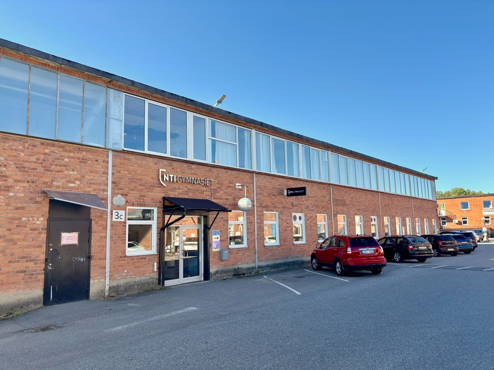

Kom och besök oss under vårt Öppet hus! Du får möjlighet att gå på rundvandring med våra elever, träffa lärare och testa på roliga aktiviteter i våra olika salar. Missa inte chansen att upptäcka hur det är att studera Webbutveckling och teknik hos oss!
